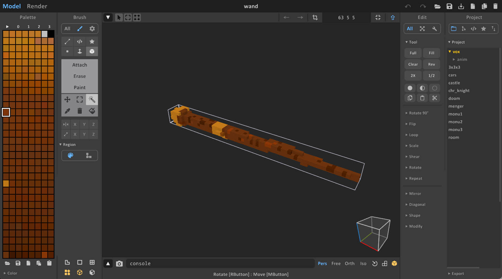
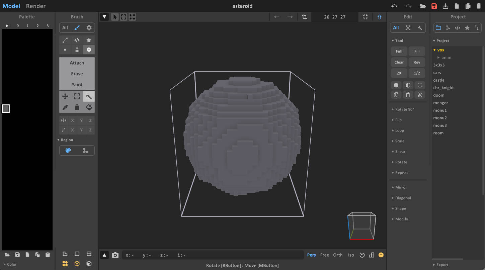
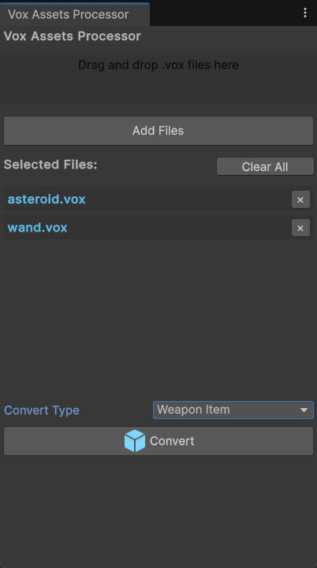
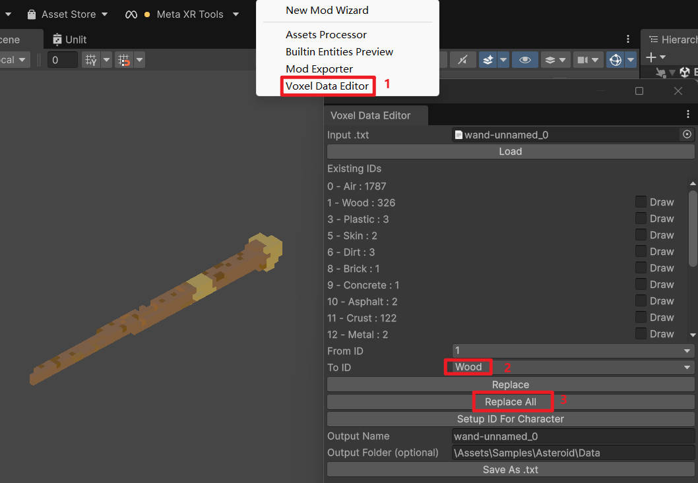
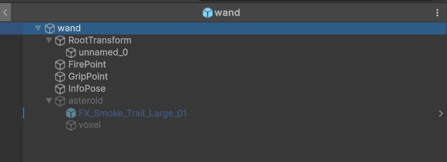
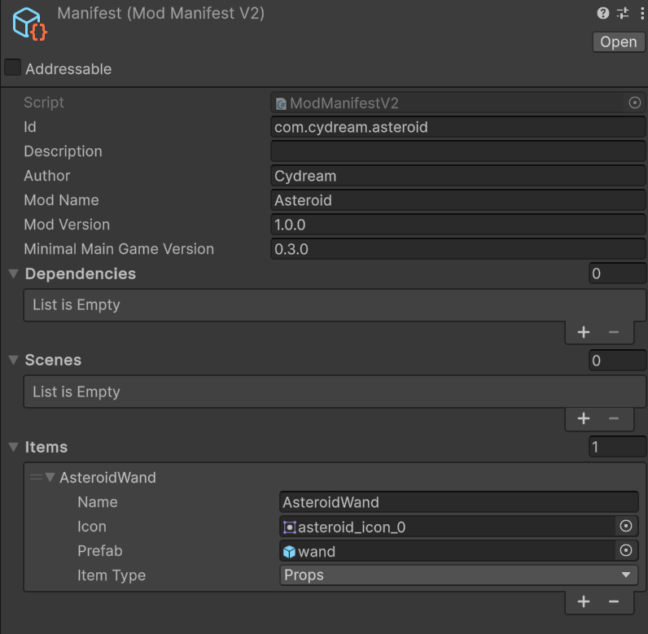

This tutorial walks through the current Asteroid Wand sample. The up-to-date implementation lives in Assets/Samples/com.cydream.asteroid and uses TypeScript rather than legacy custom C# scripts.
You need two source assets:
You can author them in MagicaVoxel or convert another model into .vox.

For the asteroid, choose a hard material mapping so the projectile behaves like a penetrating round. The sample uses a color index that maps to a high-hardness material, which is why the spawned asteroid punches through softer voxel targets.

.vox files into Unity.
For a wooden wand, remap the wand voxels to the wood material set.

The current sample does not add a custom C# EntityAsteroidWand script. Instead:
JsComponentProxy to the wand prefab.Wand.Wand from Scripts/index.ts.JsProperties to the same prefab.asteroid that points at that child transform.The TypeScript script reads that property and uses it when spawning projectiles.
Use the sample prefab layout as reference:

The weapon logic in Scripts/wand.ts follows this flow:
EntityHoldWeapon component from the prefab.JsProperties.ModAPI.AddWeaponFiredListener.PxRigidBody.Representative excerpt:
export class Wand {
private bindTo: VX.Mod.JsComponentProxy;
private weapon: VX.Entity.EntityHoldWeapon;
constructor(bindTo: VX.Mod.JsComponentProxy) {
this.bindTo = bindTo;
this.weapon = bindTo.GetComponent(
puerts.$typeof(VX.Entity.EntityHoldWeapon)
) as VX.Entity.EntityHoldWeapon;
VX.Mod.ModAPI.AddWeaponFiredListener(
this.weapon,
() => this.fireOnce()
);
}
}
This is the important pattern for toolkit mods now: keep the built-in gameplay component on the prefab, then extend it with TypeScript through JsComponentProxy.
The asteroid projectile object should:
The sample script instantiates that child object at runtime and sets PxRigidBody.velocity directly, so verify the rigidbody exists on the asteroid child object before testing.
Open manifest.asset and add the prefabs you want to ship.

At minimum:
Before export, run:
npm run lint:mod -- com.cydream.asteroid
Then build and test the mod with the exporter: